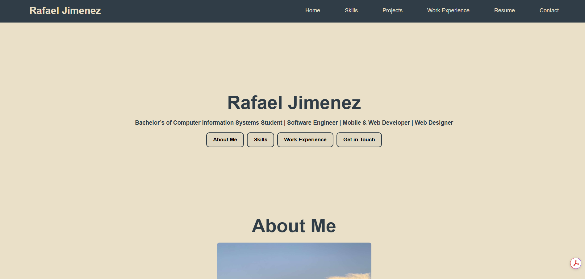

COMP 2511 – ePortfolio Website

Project Overview
This ePortfolio was created as a major artefact for COMP 2511. The goal was to build a responsive, accessible multi-page website using only HTML and CSS, ensuring full control of layout, structure, and design principles.
What I Was Asked To Do
The assignment required a home page, a contact form, at least four artefact pages, a resume page, and reflections for each project. The website needed to use semantic HTML, external CSS, flexbox/grid, and accessibility best practices.
My Process
I started by sketching the layout, then building out the navigation and global CSS. I focused on consistent spacing and clean typography. One of the biggest challenges was centering hero content with a fixed header, which pushed me to improve my understanding of flexbox alignment.
Reflection & Learning
This project helped me understand responsive design, accessibility, and multi-page site organization. I learned to structure content clearly, use semantic tags, and troubleshoot layout issues across devices. The final result represents my growth as a web developer and my ability to build functional, clean interfaces from scratch.
← Back to Projects